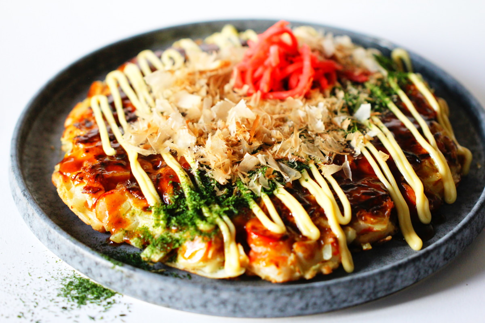

How to cook Okonomiyaki

What is Okonomiyaki?
Okonomiyaki is a traditional japanese dish which looks like a savory pancake. It has different varieties, depending on the city it is made.
This dish can take some time to perfect, but it is definetively worth the try!
(This recipe serves 2 people!)
Ingredients
- 60ml water
- 0.5 tsp. dashi powder
- 1 egg
- 50g flour
- 1 pint of salt
- 1 pint of sugar
- 1 thumb sized piece of ginger
- 2 Tbsp. rice vinegar
- 1 Tbsp. sugar
- dried nori powder
- 120g cabbage
- 1 spring onion (only the green part)
- 4 pieces of bacon
- oil
- 4 Tbsp. okonomiyaki sauce
- Kewpie mayo
- bonito flakes (optional)
Steps
- First dissolve the dashi powder in the water and combine it with the flour, egg, salt and sugar until you have a homogenous dough.
- In the meantime peel the ginger and cut it into thin pieces. Marinate it together with the vinegar and sugar in a small bowl.
- Cut the cabbage into thin slices and chop it into small pieces. Afterwards cut the green part of the spring onion into fine rings and the bacon into 3-4cm big chunks.
- Mix everything that you cut exept for the bacon into the dough.
- Take a fairly wide pan and add the oil to it. Now add the dough into the pan and form it into one big pancake. It should be around 2cm high.
- Add the bacon like shingles onto the pancake. When the first side is brown, flip the pancake onto the other side using two spatulas. Cook for another 3-5min until golden brown. Flip it again.
- Now add the okonomiyaki sauce and spread it on the surface. You can add the nori powder, kewpie mayo and bonito flakes to your liking.
- Enjoy!